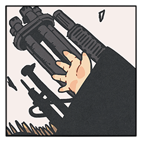

GM
これよりクライマックスフェイズに突入……ですが、その前に
《終末の獣》
『終末の獣』の効果、・生命力スロットの回復。（死亡していた場合も復活可能） を使用。
GM
『化粧応神』によってつけられた一切の傷が癒えます。
GM
これより、クライマックスフェイズを開幕いたします。
[ 《終末の獣》 ] がダイスシンボルを公開。出目は 2 です。
[ 境 仁悟 ] がダイスシンボルを公開。出目は 2 です。
[ 境 清花 ] がダイスシンボルを公開。出目は 4 です。
[ 鴟尾 鴞字郎 ] がダイスシンボルを公開。出目は 6 です。
GM
◆ラウンド１
６：鴞字郎 ４：清花 ２：《終末の獣》、仁悟
GM
戦闘に参加している鴞字郎以外のPCは、攻撃によって受けるダメージが１点増加します。
鴟尾 鴞字郎
「このバカ騒ぎを５００年待った！せいぜい派手に散りやがれ！」
鴟尾 鴞字郎
花火を打ち上げるように、あちこちで火種が破裂する。
境 清花
2D6>=5 （判定：罠術）
ShinobiGami : (2D6>=5) ＞ 12[6,6] ＞ 12 ＞ スペシャル(【生命力】1点か変調一つを回復)
GM
はい、成功です……特に生命力の欠けなどもないのでこのままで。
境 清花
2D6>=5 （判定：遊芸）
ShinobiGami : (2D6>=5) ＞ 6[1,5] ＞ 6 ＞ 成功
鴟尾 鴞字郎
2D6>=7 （判定：変装術）
ShinobiGami : (2D6>=7) ＞ 5[2,3] ＞ 5 ＞ 失敗
GM
鴞字郎は逆凪状態となり、今ラウンド一切の判定に失敗します。
[ 鴟尾 鴞字郎 ] 頑健 : 2 → 0
境 清花
先に張り巡らされた十三絃。鴞字郎を中心にぎりりと絞まる。
鴟尾 鴞字郎
「き、ききき」締め上げられながら、嗤う。
鴟尾 鴞字郎
「言うねえ。連れ添った男を一晩で乗り換えた売女が！」
鴟尾 鴞字郎
「き。き。こいつはなかなか……大人しいツラして、きちんとてめェも忍じゃねえか！」
境 清花
「忍にあらずば、苦しまなかったでしょうが」
境 清花
「苦しみを捨てたあなたに、何を言われる筋もなし」
鴟尾 鴞字郎
「そんなに心が好きなら、しっかり奥底に抱えてな！」
鴟尾 鴞字郎
「何しろテメェはこれから、愛する者を失う苦しみを味わう事になるんだからなァ！」
境 仁悟
1d99
ShinobiGami : (1D99) ＞ 83
《終末の獣》
1d99
ShinobiGami : (1D99) ＞ 73
《終末の獣》
エフェクト：クリティカルヒット/断ち/射程低下
《終末の獣》
化生鏖刃を抜き放つ――ことなく、その間合いを詰める。
《終末の獣》
獣としてのその本性を、限界まで解き放つ。
境 仁悟
直感でそう判断し、来たる衝撃に身構える。
《終末の獣》
《狗楽・大顎（くごう・おおあぎと）》
《終末の獣》
5d6
ShinobiGami : (5D6) ＞ 21[3,3,5,5,5] ＞ 21
GM
了解です。なお、同時行動であるため、次の仁悟の行動は生命力の欠けのない状態で行動が可能です。
[ 境 仁悟 ] 器術 : 1 → 0
[ 境 仁悟 ] 忍術 : 1 → 0
[ 境 仁悟 ] 謀術 : 1 → 0
[ 境 仁悟 ] 戦術 : 1 → 0
[ 境 仁悟 ] 妖術 : 1 → 0
境 仁悟
避けられぬ必殺の一撃、その顎門が閉じる寸前、
境 仁悟
刀の柄を握り、男は一歩前へ踏み込む。獣へ向けて、刀を振るう。
境 仁悟
2D6>=5 （判定：骨法術）
ShinobiGami : (2D6>=5) ＞ 3[1,2] ＞ 3 ＞ 失敗
境 仁悟
2D6>=5 （判定：骨法術）
ShinobiGami : (2D6>=5) ＞ 7[1,6] ＞ 7 ＞ 成功
境 仁悟
2D6>=5 （判定：死霊術）
ShinobiGami : (2D6>=5) ＞ 7[2,5] ＞ 7 ＞ 成功
GM
了解です。《終末の獣》は死霊術で回避判定を。
《終末の獣》
2D6>=9 （判定：意気）
ShinobiGami : (2D6>=9) ＞ 4[1,3] ＞ 4 ＞ 失敗
[ 境 仁悟 ] 謀術 : 1 → 0
境 仁悟
秘密：境 仁悟】
あなたは一族に伝わる神刀『化粧応神』の伝承者である。
あなたの一族の【使命】は『終末の獣』を殺すことだ。
愛し合う相手を『化粧応神』にて殺すことで、
この刀は真の力を発揮し、獣を殺すことが出来るようになる。
あなたはその役目から逃げるように、ずっと境 清花を愛さないようにしてきた。
しかし、あの満月の晩、あなたは彼女を愛してしまった。
メインフェイズ開始前に、以下に示す2つの選択肢の中から、
いずれかを選ぶこと。
【選択肢１】
刀の声と己の使命に応え、あなたは境 清花を殺害した。
あなたに残ったのは境 清花への【愛情】と神器『化粧応神』であった。
境 清花への愛情を獲得し、プライズ『化粧応神』と『化粧応神』の秘密を手に入れること。
【選択肢２】
刀の声に抗うため、あなたは『化粧応神』を折った。
プライズ『化粧応神』はこのセッションから取り除かれる。
境 仁悟
なるほどその言葉は、自分もまた、何度も唱えてきた。
境 仁悟
こんな役目を果たさなくて済むのだと思ってきた。
境 仁悟
けれど、結局のところ、自分は清花を愛してしまった。
境 仁悟
殺すことからも、愛することからも逃げることができなくなった。
境 仁悟
どこへ走って逃げたところで、安息を得られる場所はどこにもない。
GM
――血を啜る刀が、欠け始めた月の光の下鈍く輝く。
GM
春雷で２点。三千大戦世界で１点。血断で１点。回想シーンで１点。
GM
《終末の獣》に、合計６点の接近戦ダメージです。
《終末の獣》
されど一撃は凌ぐ、その予見とは裏腹に。
境 仁悟
仁悟の太刀筋は、常に己の迷いを遠く置いて、冴え渡る。
《終末の獣》
深々と突き刺さった刀、化粧応神をその内に抱えて。
《終末の獣》
猟犬。即ち、それはここに在らずの業。人で非ずの忍法。
《終末の獣》
化粧応神をその内に抱えたまま、己の血に沈む。
境 仁悟
食い千切られ、もはや死に体の男は、驚いた顔でそれを見送る。
《終末の獣》
あなたは自分の【居所】を持っていない。
この世界にあなたの居場所はないのだ。
「居場所がほしいか」
己の裡から聞こえる獣の声に応えれば、あなたの望みは叶うのだろうか――
この秘密を知る者は、戦果を選ぶ際に誰かの【居所】をプライズとして奪うことができる。
自分の【居所】を持っていない（奪われた）キャラクターは、クライマックスフェイズ開始時に死亡する。
獣の声に応えた場合、この死亡の効果はなくなる。
この秘密を知る者は、『終末の獣』について調査出来る。
《終末の獣》
乱世という一切が戦場の下の世は、あらゆる刃がそこにあることを許された。
《終末の獣》
しかし、終わる。すべてのものに終わりはある。
《終末の獣》
放たれた一撃が人を殺めるならば、人は去り、戦いは終わり。
《終末の獣》
その刃はあまりに切れ味が鋭く、魔を宿し、力がありすぎた。
《終末の獣》
霽月という男が女に居所を見いだしたのならば。
《終末の獣》
2D6+3>=5 （判定：意気）
ShinobiGami : (2D6+3>=5) ＞ 8[3,5]+3 ＞ 11 ＞ 成功
《終末の獣》
化生鏖刃を抜き放ち、鴟尾鴞字郎へ突き立てる。
《終末の獣》
4d6
ShinobiGami : (4D6) ＞ 13[1,2,4,6] ＞ 13
[ 《終末の獣》 ] 器術 : 1 → 0
[ 《終末の獣》 ] 体術 : 1 → 0
[ 《終末の獣》 ] 忍術 : 1 → 0
[ 《終末の獣》 ] 謀術 : 1 → 0
[ 《終末の獣》 ] 戦術 : 1 → 0
[ 《終末の獣》 ] 妖術 : 1 → 0
[ 《終末の獣》 ] 戦術 : 0 → -1
[ 《終末の獣》 ] 妖術 : 0 → -1
[ 《終末の獣》 ] 戦術 : -1 → -2
[ 《終末の獣》 ] 妖術 : 1 → 0
[ 《終末の獣》 ] 戦術 : -2 → 0
[ 鴟尾 鴞字郎 ] 器術 : 1 → 0
[ 鴟尾 鴞字郎 ] 体術 : 1 → 0
[ 鴟尾 鴞字郎 ] 謀術 : 1 → 0
[ 鴟尾 鴞字郎 ] 妖術 : 1 → 0
鴟尾 鴞字郎
その刃の切れ味を知っていれば、太刀筋を受け止めようなどとは考えない。
鴟尾 鴞字郎
素早く身をひねる。一突き。胴が裂ける。
鴟尾 鴞字郎
「そいつを持たせたんだ。おいらの頸ぐらい、一撃で飛ばしてくれねえとな！」
境 清花
目まぐるしい交錯。ひと瞬きの間に生死が決まる。
境 仁悟
血に濡れた刀を持ち、満身創痍の男が立つ。
境 仁悟
今際の際に化粧応神を握る己ではなく、鴞字郎へ向かった獣が、
《終末の獣》
終末は去り、血と肉体と、振るった技の残した傷跡ばかりがそこにある。
境 仁悟
化粧応神も、男の血筋もまた、その役目を終えた。
鴟尾 鴞字郎
「恐ろしい怪物は消え去り──これにて、めでたしめでたし、ってぇワケだ！」
鴟尾 鴞字郎
「それにしちゃあ晴れねえツラだなあ。お二人さん。なあ、笑えよ？ん？」
鴟尾 鴞字郎
「よくわかんねえな。どっちにしろ死んだんだ。どうでもいい事だろ？」
境 仁悟
怪訝そうな顔をする女に、あらためてその意味を突きつけようとは思わなかった。
境 仁悟
それで良いと、割り切ることもできなかったが。
境 仁悟
話をそこで打ち止めにして、男は妻へと呼びかける。
境 仁悟
「目の前にいるのは、お前の愛する男を殺した男だ」
境 仁悟
血を流し、満身創痍の姿で男は言葉を紡ぐ。
境 仁悟
「お前は、どうする。俺を殺して、仇を取るか」
境 清花
「されども。わたくしは、……心持たぬ刃を、折らねばなりません」
境 仁悟
「いかに心を持ったとて、使命に縛られ為すべきことを成さねばならん」
鴟尾 鴞字郎
「どうした娘っ子。おっかねえ顔をして」
境 清花
「五百余年……それだけかけて、人のこころを摩滅させておいでなら」
境 清花
「そろそろ、人の世からはご退場いただきとう存じます」
鴟尾 鴞字郎
「お前さん、無傷だ。男に擦り寄って安全圏で戦ってきてたもんなぁ？」
境 清花
「どこにいようと、もはやそこには是非もなし」
境 仁悟
「…悪いが、お前に助太刀をさせてもらう」
鴟尾 鴞字郎
「とんでもねえな。主義主張の違うだけの相手を殺すのが、お前さんらの流儀かい」
境 仁悟
「それとも、お前は刀を置いてここから逃げるか」
鴟尾 鴞字郎
「……別にお前さんたちと戦う理由はねえが……」
鴟尾 鴞字郎
「刀の終わりは見届けにゃあならん。それ、寄越してくれンのかい」
鴟尾 鴞字郎
「お前さんだって、今となっちゃあ要らんだろう、そんなもん」
境 仁悟
「分からぬならば、今からでも取り戻してみるといい」
鴟尾 鴞字郎
「仕方ねえ。仲良くあっちに送ってやるか」
鴟尾 鴞字郎
「てめえらの気分で、子供の命まで懸けた事、たっぷりと後悔させてやる」
GM
ではプロットオープン、よろしくお願いします！
[ 鴟尾 鴞字郎 ] がダイスシンボルを公開。出目は 5 です。
[ 境 仁悟 ] がダイスシンボルを公開。出目は 4 です。
[ 境 清花 ] がダイスシンボルを公開。出目は 4 です。
GM
◆ラウンド２ プロット５：鴞字郎 ４：清花、仁悟
鴟尾 鴞字郎
「そいつをここで殺す理由が出来たってんなら、こんなに楽しいこたあ無え」
鴟尾 鴞字郎
「これが、お前さんの言う心ってヤツかねえ！」

鴟尾 鴞字郎
重々しい金属音を立てて、銃器が姿を現した。
鴟尾 鴞字郎
「──《絡繰遊戯・凶盧一擲（きょうろいってき）》！」
鴟尾 鴞字郎
奥義を使用します。対象は娘っ子、特技は絡繰術
鴟尾 鴞字郎
5d6
ShinobiGami : (5D6) ＞ 19[1,3,5,5,5] ＞ 19
[ 境 清花 ] 器術 : 1 → 0
[ 境 清花 ] 忍術 : 1 → 0
[ 境 清花 ] 体術 : 1 → 0
[ 境 清花 ] 戦術 : 1 → 0
[ 境 清花 ] 妖術 : 1 → 0
GM
RPを……これは鴞字郎さんの演出の続きからかな。
鴟尾 鴞字郎
せりあがる銃器から、弾丸のシャワーが放たれる。直線的に向かう弾。山なりに向かう弾。追尾する弾。着弾と共に破裂する弾。
境 清花
哄笑と、炸裂する火薬の音とが混じり合う中。
鴟尾 鴞字郎
「い～い赤色だ！清花って名ァ、撃たれて舞い散る血の事か！」
境 清花
荒い息が、散々に撃たれた余波に上がる土煙を裂く。
境 仁悟
1d99
ShinobiGami : (1D99) ＞ 57
境 清花
1d99
ShinobiGami : (1D99) ＞ 35
境 清花
兵糧丸をひとつ使用。体術を復帰。接近戦攻撃で鴞字郎
[ 境 清花 ] 体術 : 0 → 1
境 清花
2D6+1>=5 （判定：手練）
ShinobiGami : (2D6+1>=5) ＞ 4[2,2]+1 ＞ 5 ＞ 成功
境 清花
2d6+1>=5
ShinobiGami : (2D6+1>=5) ＞ 7[1,6]+1 ＞ 8 ＞ 成功
鴟尾 鴞字郎
2D6>=10 （判定：絡繰術）
ShinobiGami : (2D6>=10) ＞ 9[3,6] ＞ 9 ＞ 失敗
GM
２点の接近戦ダメージを受け、鴞字郎は脱落します。
[ 鴟尾 鴞字郎 ] 忍術 : 1 → 0
[ 鴟尾 鴞字郎 ] 戦術 : 1 → 0
境 清花
「いかな刃も、いずれは折れる。あなたという刃は、今がその時」
境 清花
透明な糸。糸の細さであるがゆえ、数多の銃弾にも絶えきらず。
鴟尾 鴞字郎
ほどこうと手を動かそうにも、その手も絡め取られ。
鴟尾 鴞字郎
どさり、どさりと地面に両手首が落ちる音。
鴟尾 鴞字郎
最後の一撃。対空千手砲を使用します。
鴟尾 鴞字郎
2D6>=5 （判定：絡繰術）
ShinobiGami : (2D6>=5) ＞ 7[3,4] ＞ 7 ＞ 成功
境 清花
花が散る。花弁が舞う。血の花よりも淡い色。
鴟尾 鴞字郎
でたらめに放たれた弾は、獲物を捉えることはなく。
鴟尾 鴞字郎
視界にもやがかかる。これは果たしてこの花ゆえか、それともこの糸ゆえか。
鴟尾 鴞字郎
炉を背に、あんたがあたしを見ている。
鴟尾 鴞字郎
瞳に涙を浮かべた、かつてのあたしの姿だった。
鴟尾 燕次郎
「しかたねえ奴だな。おめえは、ちぃとばかし優しすぎるからよ」
鴟尾 燕次郎
「出来るならおいらが替わってやりてぇが……生憎と、それが出来るのはおまえだけなんだよな」
鴟尾 鴞字郎
今この時も、あの子との思い出は、少しずつ消えていく。
鴟尾 鴞字郎
愛しいあの子。愛おしいはずの、あの子……。
鴟尾 燕次郎
「それでいいんだ。全部……全部忘れちまえ」
鴟尾 燕次郎
「おまえは、ただの刀鍛冶。おいらは、ただの刀。そしてあいつは……ただの獣だ」
鴟尾 鴞字郎
子供を殺す覚悟が、できなかったあたしを。
鴟尾 鴞字郎
あの人は、ひどいやり方で後押しした。
鴟尾 鴞字郎
これからあたしは、あの子を殺す武器を作る。
鴟尾 鴞字郎
そして、あの子が殺されるのを、ただ見守らなきゃいけない。
鴟尾 鴞字郎
刀ができるまで、長い時間がかかった。
鴟尾 鴞字郎
あの子が殺されるのを、ただ待つだけの人生。
鴟尾 鴞字郎
地獄だった。心は、すり減っていった。
鴟尾 鴞字郎
任務が為されど地獄。為されずとも地獄。
鴟尾 鴞字郎
もう、あの子の親を名乗る資格はとっくに消えて失せたけど。
鴟尾 鴞字郎
あの子の記憶と情を完全に消し去るまでに──とてもとても長い時間がかかった。
鴟尾 鴞字郎
いけねえな。なに、いまさら昔のことを。
鴟尾 鴞字郎
あいつは終末の獣で、あれが死んでも、まるで心は痛まなかった。
鴟尾 鴞字郎
……昔のおいらだったら、こんなバカな死に方はしなかったんかね？
鴟尾 鴞字郎
見届けは出来なかったが……まあ、やれるだけはやったろ？
鴟尾 鴞字郎
炉の場所を伝える。よかったら、そいつの処理は頼むわ。
鴟尾 鴞字郎
まあ、今更虫のいい話かもしらねえが。
鴟尾 鴞字郎
それなりに、いい頑張りっぷりだったんじゃねえか？
鴟尾 鴞字郎
先にバカ息子と一緒に地獄に行ってるがよ。
鴟尾 鴞字郎
悪ぃが、任務のために頑張ったお前も、地獄に連れてこられそうなんだよな。
GM
一日挟んで15日の月曜日から再開になります。
GM
クライマックスの残りとエピローグをやりましょう。よろしくお願いします。
GM
多分次回で終わると思いますが最後までよろしくお願いします！